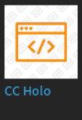

Setup
Welcome to the Setup Documentation of CC Holo! From here, you'll be taken through the entire setup process, from taking it out of the Toolbox to publishing the game.
Before pulling in the model, make sure your game has a lobby, along with nothing that may interfere with the holo, such as leaderstats.
Part 1: Pulling in Model
To pull in the CC Holo model, open the Toolbox. This is located in the View tab in Studio.
Next, go to the Inventory tab.
Look for the CC Holo item, and click it.

Once you do, you may need to give Studio a minute to bring in everything. It may freeze, but it shouldn't crash.
After everything is loaded, and you can move around, give the README script a look through. Once you have, drag each model in it to the Service with the same name.
Getting the Teams Service
If you don't already have the Teams service, you can get it by going to the Model tab and selecting the highlighted button.
Select Teams, then click Insert
Part 2: Extracting the Model
After each model is in the correct service, select each one and press CTRL+U to ungroup it.
Once everything is ungrouped, it should appear as shown in these screenshots.
ReplicatedStorage
ServerScriptService
ServerStorage
StarterGui
StarterPlayer
Teams
If everything looks good, then congratulations! You've reached the end of the Setup tutorial! To learn about what settings can be changed, look at the Settings Documentation.